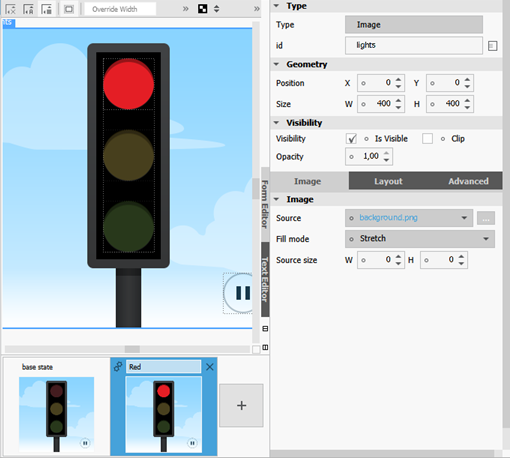
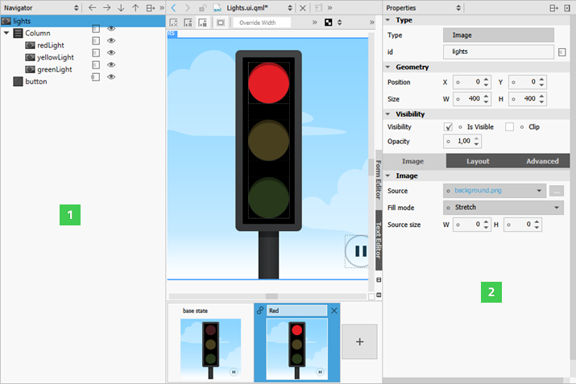

Creating Screens
You can use predefined QML types and your own components to create screens. Typically, the main QML file in a Qt Quick project specifies the main window of an application.
The QML files in the project folder are displayed in QML Components in the Library.
Adding Components to Screens
- Drag and drop components from the Library to the Navigator or Form Editor.
- Select components in the Navigator to edit their properties in the Properties pane.
For example, you can anchor components to a position on the screen.
For more information about the ready-made components available, see Using Qt Quick Controls.
Using Data Models
You can create the following types of views to organize items provided by data models:
- Grid View provides a grid vizualization of a model.
- List View provides a list vizualization of a model.
- Path View visualizes the contents of a model along a path.
When you add a Grid View, List View, or Path View, the ListModel and the delegate component that creates an instance for each item in the model are added automatically. You can edit item properties in the Properties pane or in the Text Editor. You can also replace the default model and delegate with other, more complex models and delegates in the Text Editor.
Positioning Items on Screens
The position of an item on the canvas can be either absolute or relative to other items. If you are designing a static user interface, manual positioning provides the most efficient form of positioning items on the screen. For a dynamic user interface, you can employ the following positioning methods provided by Qt Quick:
Setting Bindings
Property binding is a declarative way of specifying the value of a property. Binding allows a property value to be expressed as a JavaScript expression that defines the value relative to other property values or data accessible in the application. The property value is automatically kept up to date if the other properties or data values change.
Property bindings are created implicitly in QML whenever a property is assigned a JavaScript expression. To set JavaScript expressions as values of properties in Qt Quick Designer, click the circle icon next to a property to open a context menu, and select Set Binding.
The Binding Editor supports code completion. Start typing a string and press Ctrl+Space to display a list of properties, IDs, and code snippets. When you enter a period (.) after a property name, a list of available values is displayed. Press Enter to accept the first suggestion in the list and to complete the code.
To remove bindings, select Reset in the context menu.
You can set bindings also in the Connections view. For more information, see Adding Bindings Between Properties.
For more information on the JavaScript environment provided by QML, see Integrating QML and JavaScript.
Bindings are a black box for Qt Quick Designer and using them might have a negative impact on performance, so consider setting anchors and margins for items, instead. For example, instead of setting parent.width for an item, you could anchor the item to its sibling items on the left and the right.
Setting Anchors and Margins
In an anchor-based layout, each QML type can be thought of as having a set of invisible anchor lines: top, bottom, left, right, fill, horizontal center, vertical center, and baseline.
In the Layout pane you can set anchors and margins for items. To set the anchors of an item, click the anchor buttons. You can combine the top/bottom, left/right, and horizontal/vertical anchors to anchor items in the corners of the parent item or center them horizontally or vertically within the parent item.
For convenience, you can click the (Fill to Parent) toolbar button to apply fill anchors to an item and the (Reset Anchors) button to reset the anchors to their saved state.
Specifying the baseline anchor in Qt Quick Designer is not supported. You can specify it in the Text Editor.
For performance reasons, you can only anchor an item to its siblings and direct parent. By default, an item is anchored to its parent when you use the anchor buttons. Select a sibling of the item in the Target field to anchor to it, instead.
Arbitrary anchoring is not supported. For example, you cannot specify: anchor.left: parent.right. You have to specify: anchor.left: parent.left. When you use the anchor buttons, anchors to the parent item are always specified to the same side. However, anchors to sibling items are specified to the opposite side: anchor.left: sibling.right. This allows you to keep sibling items together.
In the following image, Rectangle 2 is anchored to Rectangle 1 on its left and to the bottom of its parent.
The anchors for Rectangle 2 are specified as follows in code:
Rectangle { id: rectangle2 anchors.left: rectangle1.right anchors.leftMargin: 15 anchors.bottom: parent.bottom anchors.bottomMargin: 15 // }
Margins specify the amount of empty space to leave to the outside of an item. Margins only have meaning for anchors. They do not take any effect when using other layouts or absolute positioning.
Using Positioners
Positioner items are container items that manage the positions of items in a declarative user interface. Positioners behave in a similar way to the layout managers used with standard Qt widgets, except that they are also containers in their own right.
You can use the following positioners to arrange items on screens:
- Column arranges its child items vertically.
- Row arranges its child items horizontally.
- Grid arranges its child items so that they are aligned in a grid and are not overlapping.
- Flow arranges its child items side by side, wrapping as necessary.
To lay out several items in a Column, Row, Grid, or Flow, select the items on the canvas, and then select Layout in the context menu.
Using Layouts
From Qt 5.1, you can use QML types in the Qt Quick Layouts module to arrange Qt Quick items on screens. Unlike positioners, they manage both the positions and sizes of items in a declarative interface. They are well suited for resizable user interfaces.
You can use the following layout types to arrange items on screens:
- Layout provides attached properties for items pushed onto a Column Layout, Row Layout, or Grid Layout.
- Column Layout provides a grid layout with only one column.
- Row Layout provides a grid layout with only one row.
- Grid Layout provides a way of dynamically arranging items in a grid.
- Stack Layout provides a stack of items where only one item is visible at a time.
To lay out several items in a Column Layout, Row Layout, Grid Layout, or Stack Layout, select the items in the Form Editor, and then select Layout in the context menu.
You can also click the (Column Layout), (Row Layout), and  (Grid Layout) toolbar buttons to apply layouts to the selected items.
(Grid Layout) toolbar buttons to apply layouts to the selected items.
To make an item within a layout as wide as possible while respecting the given constraints, select the item on the canvas and then select Layout > Fill Width in the context menu. To make the item as high as possible, select Fill Height.
Editing Stack Layouts
To add items to a Stack Layout, select the  button next to the type name in the Form Editor. To move between items, select the
button next to the type name in the Form Editor. To move between items, select the  (Previous) and (Next) buttons.
(Previous) and (Next) buttons.
To add a tab bar to a stack layout, select Stacked Container > Add Tab Bar.
To raise or lower the stacking order of an item, select Stacked Container > Increase Index or Decrease Index.
Organizing Items
From Qt 5.7, you can use the following Qt Quick Controls 2 types to organize items on screens:
- Frame places a logical group of controls within a visual frame.
- Group Box is used to lay out a logical group of controls together, within a titled visual frame.
- Label is a text label with inherited styling and font.
- Page Indicator indicates the currently active page.
- Pane provides a background matching with the application style and theme.
Using States
Use states and transitions to navigate between screens.
QML states typically describe user interface configurations, such as the UI controls, their properties and behavior and the available actions. For example, you can use states to create two screens.
To add states, click the empty slot in the States pane. Then modify the new state in the Form Editor or the Properties pane.

The properties that you change in a state are highlighted with blue color. In the Text Editor, you can see the changes recorded as changes to the base state.
To keep the QML code clean, you should create a base state that contains all the types you will need in the application. You can then create states, in which you hide and show a set of items and modify their properties. This allows you to:
- Align items on different screens with each other.
- Avoid excessive property changes. If an item is invisible in the base state, you must define all changes to its child types as property changes, which leads to complicated QML code.
- Minimize the differences between the base state and the other states to keep the QML code short and readable and to improve performance.
- Avoid problems when using transitions and animation when changing states.
To create screens for an application by using states:
- In the base state, add all items you will need in the application (1). While you work on one screen, you can click the icon to hide items on the canvas that are not part of a screen.
- In the States pane, click the empty slot to create a new state and give it a name. For example,
Normal. - In the Properties pane (2), deselect the Visibility check box or set Opacity to 0 for each item that is not needed in this view. If you specify the setting for the parent item, all child items inherit it and are also hidden.

- Create additional states for each screen and set the visibility or opacity of the items in the screen.
- To determine which view opens when the application starts, use the Text Editor to set the state of the root item of the .qml file, as specified by the following code snippet:
Item { state: "Normal" }
Using SCXML State Machines
To use QML and Qt Quick Designer together with an SCXML state machine, add states and bind them to the state machine in the Backends tab, as described in Managing C++ Backend Objects.
In the States pane, you can edit the when condition of states to map QML states to the states of the SCXML state machine. For an example, see Qt SCXML Traffic Light QML Example (Dynamic).
Animating Screens
To make movement between states smooth, you can specify transitions. You can use different types of animated transitions. For example, you can animate changes to property values and colors. You can use rotation animation to control the direction of rotation. For more information, see Animation and Transitions in Qt Quick.
You can use the ParallelAnimation type to start several animations at the same time. Or use the SequentialAnimation type to run them one after another.
You can use the Text Editor to specify transitions. For more information, see Transition.
Adding User Interaction Methods
You can use the following QML types to add basic interaction methods to screens:
- Flickable items can be flicked horizontally or vertically.
- Focus Scope assists in keyboard focus handling when building reusable QML components.
- Mouse Area enables simple mouse handling.
Since Qt 5.7, you can also use the following Qt Quick Controls 2 types to inform users about the progress of the application or to gather input from the user:
- Busy Indicator indicates activity while content is being loaded.
- Button provides a push button that you can associate with an action.
- Check Box provides an option button that can be toggled on (checked) or off (unchecked).
- Check Delegate presents an item delegate that can be toggled on (checked) or off (unchecked).
- Combo Box is a combined button and popup list that is populated by using a data model.
- Dial is a circular dial that is rotated to set a value.
- Item Delegate is a standard view item that can be used in various views and controls.
- Progress Bar indicates the progress of an operation.
- Radio Button provides an option button that can be switched on (checked) or off (unchecked).
- Radio Delegate presents an item delegate that can be toggled on (checked) or off (unchecked).
- Slider selects a value by sliding a handle along a track.
- Spin Box enables the user to specify a value by clicking the up or down buttons, by pressing up or down on the keyboard, or by entering a value in the box.
- Switch is an option button that can be toggled on or off.
- Text Area displays multiple lines of editable formatted text.
- Text Field displays a single line of editable plain text.
- Tool Bar is a container of application-wide and context sensitive actions and controls, such as navigation buttons and search fields.
- Tool Button is a button that is functionally similar to Button, but provides a look that is more suitable for a Tool Bar.
- Tumbler is a spinnable wheel of items that can be selected.
Implementing Application Logic
A user interface is only a part of an application, and not really useful by itself. You can use Qt or JavaScript to implement the application logic. For more information on using JavaScript, see Integrating QML and JavaScript.
For an example of how to use JavaScript to develop a game, see the QML Advanced Tutorial.